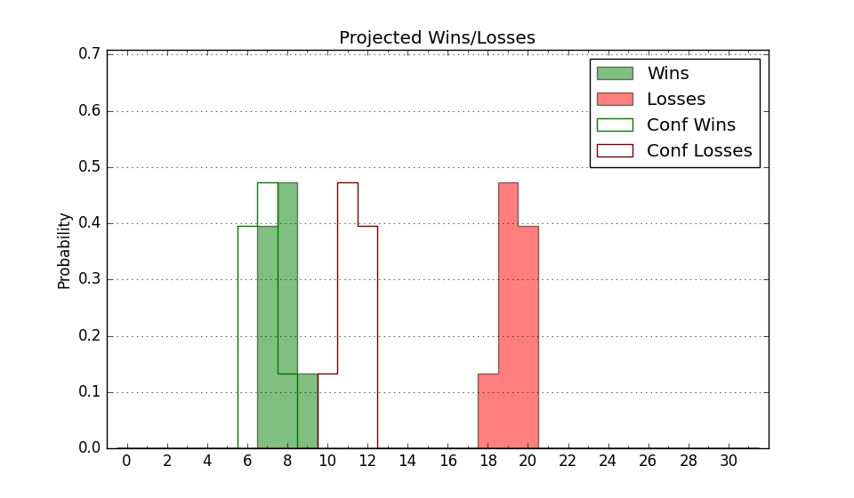

| Home | Game Probabilities | Conferences | Preseason Predictions | Odds Charts | NCAA Tournament |
| City: | New Orleans, Louisiana | |
| Conference: | Southland (7th)
| |
| Record: | 6-10 (Conf) 7-18 (Overall) | |
| Ratings: | Comp.: -20.4 (352nd) Net: -20.5 (352nd) Off: 93.8 (329th) Def: 114.3 (350th) SoR: 0.0 (154th) |
| Remaining | ||||||
|---|---|---|---|---|---|---|
| Date | Opponent | Win Prob | Pred. | |||
| 2/25 | @ Lamar (359) | 42.1% | L 72-75 | |||
| 3/1 | @ McNeese St. (345) | 31.6% | L 71-77 | |||
| Previous | Game Score | |||||
| Date | Opponent | Win Prob | Result | Off | Def | Net |
| 11/7 | @Butler (105) | 3.6% | L 53-89 | -15.3 | 5.1 | -10.2 |
| 11/17 | @LSU (153) | 5.8% | L 62-91 | -7.6 | -6.3 | -13.9 |
| 11/23 | The Citadel (330) | 52.8% | L 65-72 | -23.4 | 11.1 | -12.2 |
| 11/24 | IUPUI (360) | 76.4% | W 87-84 | 7.5 | -17.0 | -9.5 |
| 11/25 | Denver (284) | 39.6% | L 76-77 | 1.4 | 3.0 | 4.4 |
| 12/3 | Louisiana Lafayette (120) | 13.0% | L 77-78 | 5.2 | 8.2 | 13.4 |
| 12/10 | @Portland (132) | 4.7% | L 61-100 | -19.9 | -1.3 | -21.2 |
| 12/13 | @Boise St. (26) | 1.1% | L 50-91 | -8.0 | -7.2 | -15.1 |
| 12/21 | @Purdue (4) | 0.4% | L 53-74 | 22.6 | -6.7 | 15.9 |
| 12/30 | @Houston Baptist (356) | 38.8% | L 96-101 | 6.4 | -7.8 | -1.4 |
| 1/5 | Lamar (359) | 71.2% | W 81-55 | 11.6 | 21.7 | 33.2 |
| 1/7 | Houston Baptist (356) | 68.4% | W 82-59 | -0.1 | 25.0 | 24.9 |
| 1/12 | @Incarnate Word (346) | 32.4% | W 85-79 | 2.9 | 11.8 | 14.7 |
| 1/14 | @Tex A&M Corpus Chris (213) | 9.8% | L 79-97 | 12.6 | -15.7 | -3.1 |
| 1/19 | Texas A&M Commerce (300) | 45.6% | L 58-63 | -19.9 | 11.4 | -8.5 |
| 1/21 | Northwestern St. (222) | 28.5% | L 65-88 | -5.3 | -16.7 | -22.0 |
| 1/26 | @Southeastern Louisiana (278) | 15.8% | L 87-92 | 19.5 | -11.1 | 8.3 |
| 1/28 | Southeastern Louisiana (278) | 39.1% | L 64-80 | -14.5 | -2.2 | -16.7 |
| 2/2 | Tex A&M Corpus Chris (213) | 27.0% | L 69-86 | -3.2 | -7.5 | -10.7 |
| 2/4 | Incarnate Word (346) | 62.0% | L 70-78 | -9.1 | -17.0 | -26.1 |
| 2/9 | @Nicholls St. (263) | 14.5% | L 59-84 | -16.7 | 5.4 | -11.3 |
| 2/11 | McNeese St. (345) | 61.1% | L 78-79 | 11.3 | -15.5 | -4.1 |
| 2/16 | @Texas A&M Commerce (300) | 19.7% | W 84-78 | 14.9 | 5.8 | 20.7 |
| 2/18 | @Northwestern St. (222) | 10.5% | W 68-65 | 8.7 | 19.7 | 28.5 |
| 2/23 | Nicholls St. (263) | 36.5% | W 88-82 | 15.3 | 0.6 | 15.9 |
| Stats & Trends | |||||
|---|---|---|---|---|---|
| Current | Day | Week | Month | Season | |
| Composite | -20.4 | -- | +1.7 | -0.4 | -8.1 |
| Comp Rank | 352 | -- | +4 | -4 | -39 |
| Net Efficiency | -20.5 | -- | +1.9 | +0.5 | -- |
| Net Rank | 352 | -- | +4 | -1 | -- |
| Off Efficiency | 93.8 | -- | +0.9 | +1.5 | -- |
| Off Rank | 329 | -- | +6 | +4 | -- |
| Def Efficiency | 114.3 | -- | +0.9 | -1.0 | -- |
| Def Rank | 350 | -- | +7 | -3 | -- |
| SoS Rank | 342 | -- | +1 | -10 | -- |
| Exp. Wins | 7.7 | +0.0 | +1.8 | +0.1 | -4.4 |
| Exp. Conf Wins | 6.7 | +0.0 | +1.8 | +0.1 | -2.7 |
| Conf Champ Prob | 0.0 | -- | -- | -0.1 | -11.0 |

| Advanced Stats | ||
|---|---|---|
| Stat | Value | Rank |
| Off Eff FG % | 0.495 | 221 |
| Off Ast Ratio | 0.139 | 193 |
| Off ORB% | 0.258 | 213 |
| Off TO Rate | 0.209 | 361 |
| Off FT Ratio | 0.332 | 131 |
| Def Eff FG % | 0.564 | 348 |
| Def Ast Ratio | 0.159 | 300 |
| Def ORB% | 0.322 | 335 |
| Def TO Rate | 0.170 | 90 |
| Def FT Ratio | 0.415 | 342 |